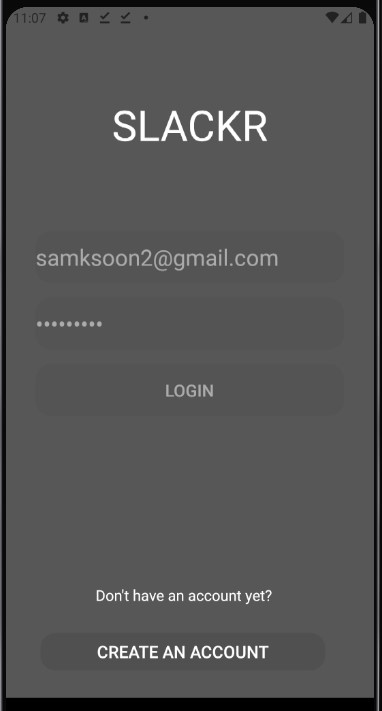
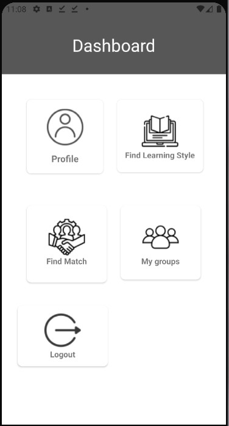
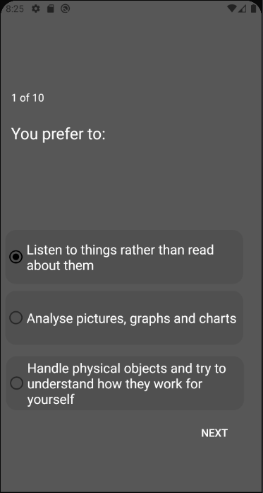
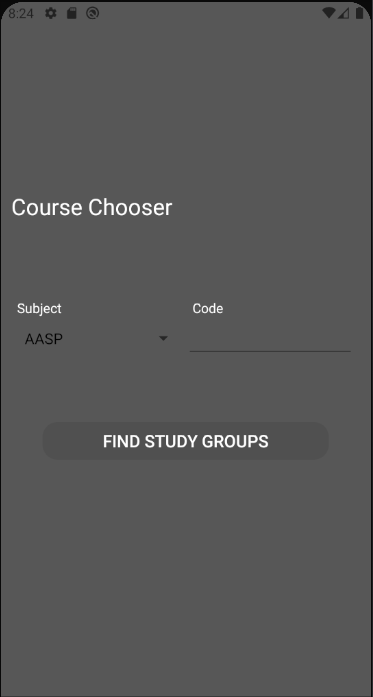

| Slackr | |
|
apk GitHub Link |
|
|
Source GitHub Link |
|
| Slackr is an app that allows users to easily create and find study groups for UMD students. By taking a short quiz, the app determines a user's learning style which allows users to find matching study groups for their classes based on their unique results. Once a user creates/joins a group, they'll be able to view the study group details and obtain access to the study group link. | |
|  |  |
|  |  |
| Youtube Video Demonstration | |
|
Firebase Icons obtained from Flaticon Learning style quiz obtained from Education Planner and Arden |
|